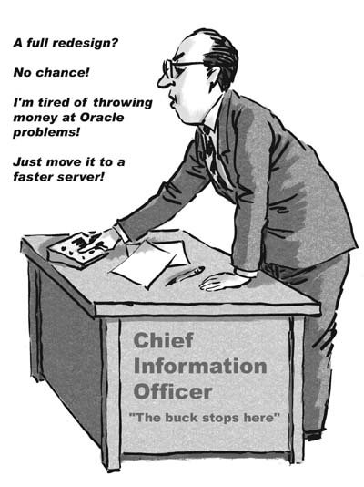
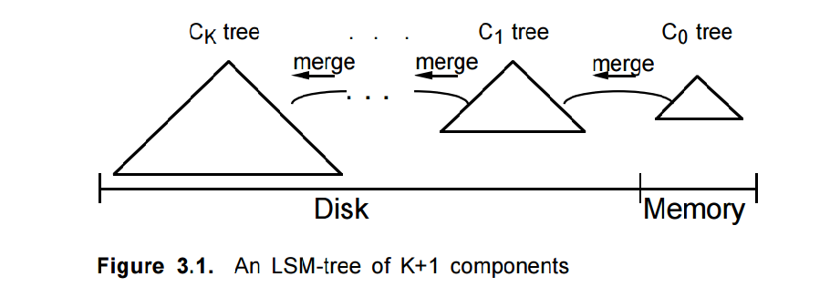

A Journey to Erlang
A long long time ago ...
The Spine Part - The supplier speaks ...
“The contract was (and continues to be) one of the largest IT programmes in the world, consuming over 15,000 man-years of effort to date ... Over 3,000 servers are hosted and supported”
“(The delivery) methodology is now an internationally recognised standard for complex software development programme delivery”
What did we build again?
The world of accidental distributed systems

“They shouldn't build these death stars any more. They keep getting blown up”

Planning the technology solution
Looked sideways. Looked backwards
Erlang gave vision of availability and software-driven scale
The power of small unified teams with a common goal

The Key Technology Changes
The Actor Model
An end-to-end model for scaling and failure
Fifteen applications - four flows
Performance through visibility
Automate
Discipline and conscious trade-offs
What did/does it cost?
Took 100 people years from inception to 1-years service
Requires just over 100 commodity 1RU servers in live
Release costs are 0.1% of previous release costs
90% reduction in operating costs
Total running team of 30 people supporting and ...
... Managing more than £10m pa of change backlog
Adding the same slow node resolves any capacity issue
Does it work?
(Nearly) like-for-like functional replacement ...
99.999% available since go live
Supports over 300 message interactions, eight UI applications
45M messages a day
Provides accesss to 1.5bn records and documents
Aggregate reduction in wait time is over 800 working days each day
At the heart of it all - an Erlang Product
What is Riak?
Inspired by the Amazon Dynamo paper
Written in Erlang
Scale-out Key-Value store
Data protection on conflict (not lww)
Use Postgres ... but sometimes
You are willing to be the query planner
You are willing to reason (a lot) about consistency
Because the operational cost of achieving ...
Availability and Scalability and Durability
... are your absolute priority
Where we had come from
But what now?
But what now?
News from Leeds
Areas for Improvement
Cost of Availability and Durability
Consistency windows and Secondary Indexes
Prioritisation of workloads
Bigger objects
Observability
Replication
The Open Source Transition
Tests that pass
Code that wins
Listening to existing customers first
Academia is a user and an enabler
Revisiting Log-Structured Merge Trees
A new backend
Some conclusions
Be wary of accidentally building a distributed system
Sometimes other approaches to databases are justified
BEAM-based languages have access to valuable solutions
Erlang isn't that scary
Thank-You
http://martinsumner.github.io/presentations/elixir_north#/
https://github.com/martinsumner/leveled
https://github.com/nhs-riak
@masleeds